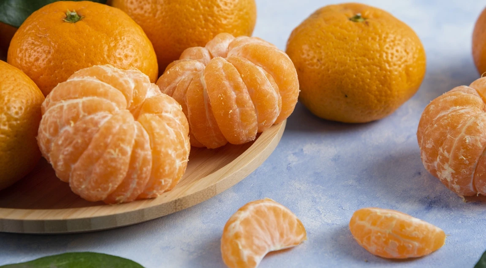

Agridera Fresh Market Mandarin Hybrids
×××××
Agridera aspires to be one of the world’s leading companies in the breeding, production,
and marketing of mandarin seeds. We heavily invest in research and development to provide
innovative solutions to growers and consumers across various countries worldwide. Our breeding
focus is on developing disease-resistant cultivars tailored to meet the needs of diverse global markets.
Currently, our efforts are focused on enhancing resistance to common mandarin diseases such as the Citrus Tristeza Virus (CTV), Alternaria, and Phytophthora, while also improving other key horticultural traits. Our breeding programs are working towards developing mandarins with resistance to new challenges like the Huanglongbing (HLB) disease, while also optimizing flavor, size, shelf life, and fruit quality.
Our breeding aims to combine the best of both worlds—disease resistance and high-quality fruit characteristics. In terms of horticultural traits, we emphasize uniformity in size, firmness, deep orange color, sweetness, ease of peeling, and extended shelf life. We are focusing on round and slightly elongated shapes to offer a wide variety of choices for consumers.
Currently, our efforts are focused on enhancing resistance to common mandarin diseases such as the Citrus Tristeza Virus (CTV), Alternaria, and Phytophthora, while also improving other key horticultural traits. Our breeding programs are working towards developing mandarins with resistance to new challenges like the Huanglongbing (HLB) disease, while also optimizing flavor, size, shelf life, and fruit quality.
Our breeding aims to combine the best of both worlds—disease resistance and high-quality fruit characteristics. In terms of horticultural traits, we emphasize uniformity in size, firmness, deep orange color, sweetness, ease of peeling, and extended shelf life. We are focusing on round and slightly elongated shapes to offer a wide variety of choices for consumers.
Agridera Mandarin breeding programs focus on three main segments:
Greenhouse Mandarin Breeding, Open-field Mandarin Breeding, and Compact Tree Type Mandarins.
Greenhouse Mandarin Breeding Program
This program is designed for the Spanish and Turkish markets. The focus is on early-ripening
cultivars with a medium to large round fruit shape, along with resistance to CTV, Alternaria,
and Phytophthora. Some hybrids may also carry resistance to additional diseases such as bacterial
canker and mildew. These mandarins are specifically bred for high fruit quality in controlled environments.
Open-field Mandarin Breeding
This breeding segment targets markets in Brazil, Morocco, and Turkey. The goal is to develop large,
juicy mandarins with a round shape and good resistance to CTV, Alternaria, and Phytophthora. In the
near future, our breeding will also include resistance to the HLB disease as a fundamental trait in our mandarins.
Compact Tree Type Mandarins
This breeding is aimed for Mediterranean regions and focuses on compact tree varieties that can thrive
in smaller spaces while producing round and elongated mandarins. The fruit sizes range from standard
(140-180 grams) to larger sizes (up to 300 grams and more). These mandarins are bred with strong resistance
to CTV, Alternaria, and Phytophthora, with some hybrids incorporating resistance to additional pathogens like mildew and bacterial canker.
Agridera operates through a network of international and local distributors, ensuring our high-quality
mandarin varieties reach growers and consumers around the world.
{{p.title}}
{{p.short_text}}